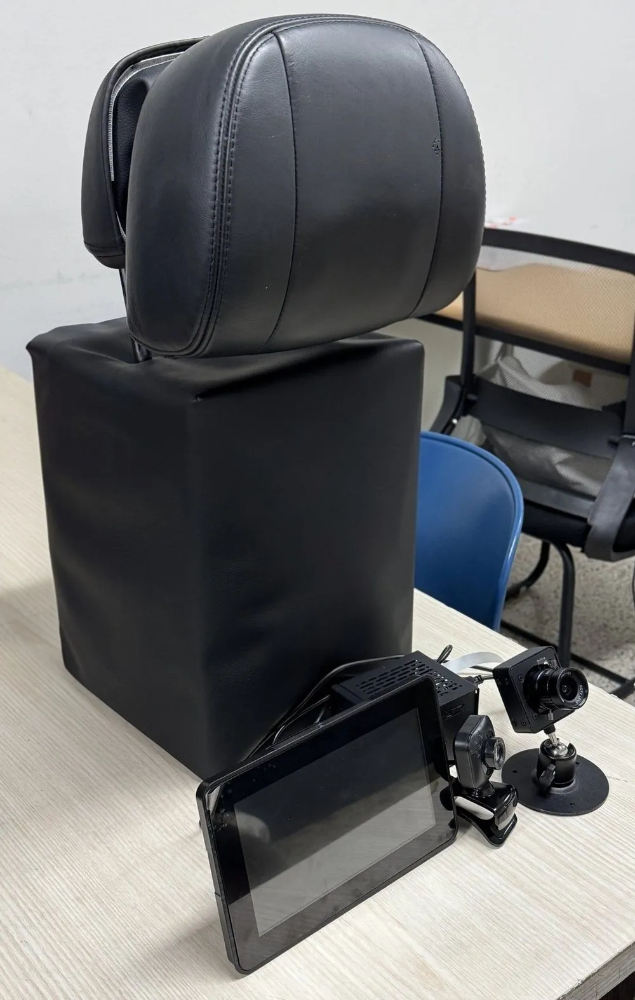
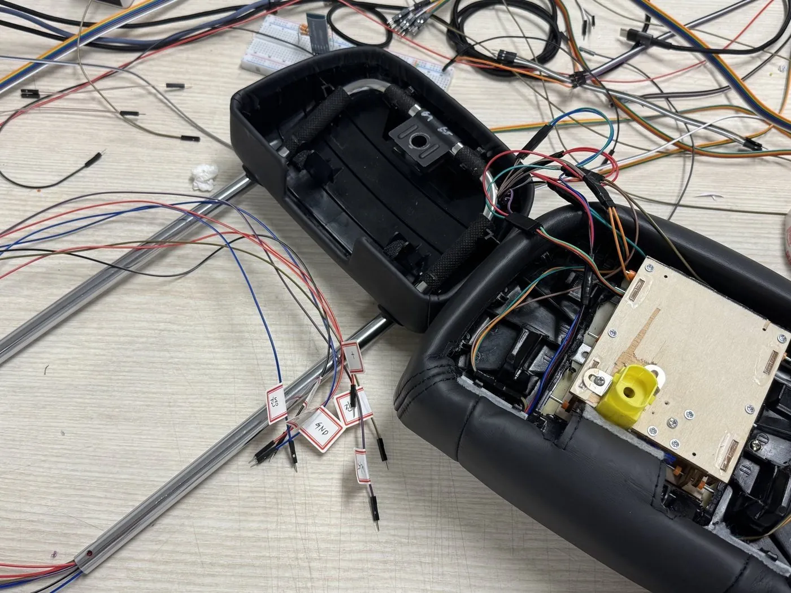
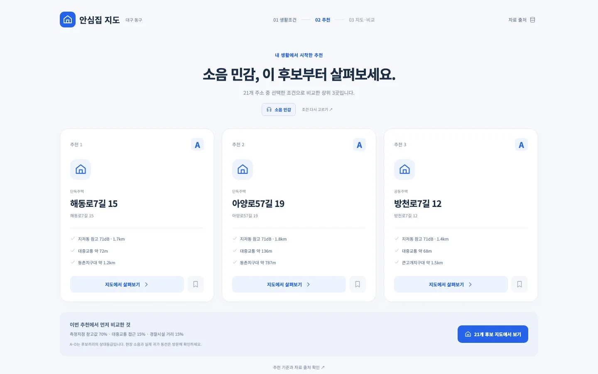
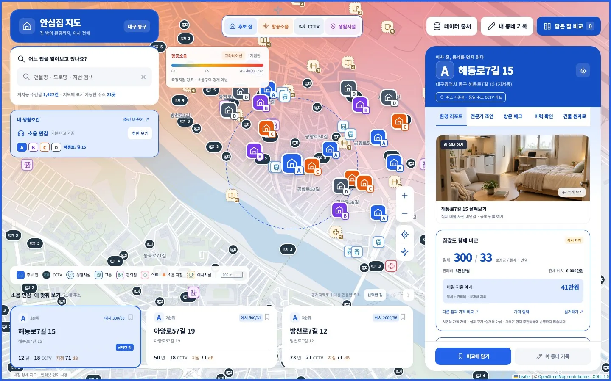
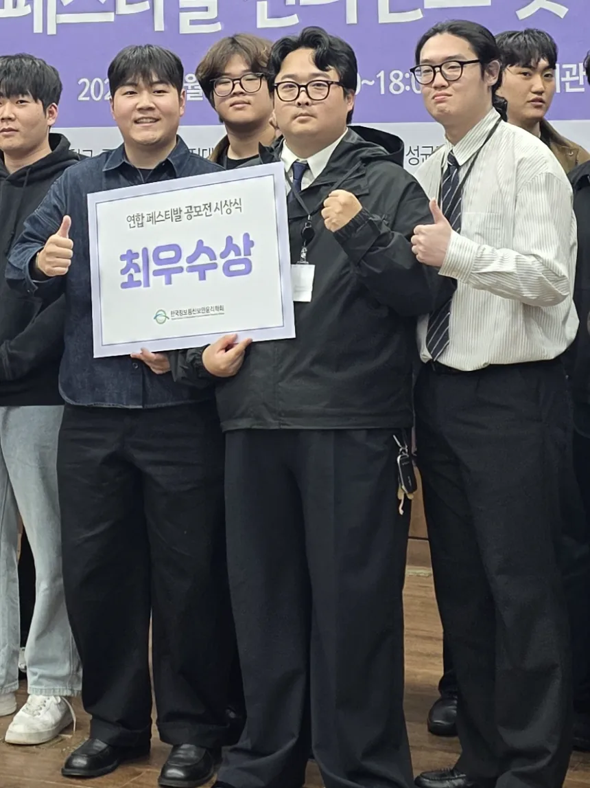
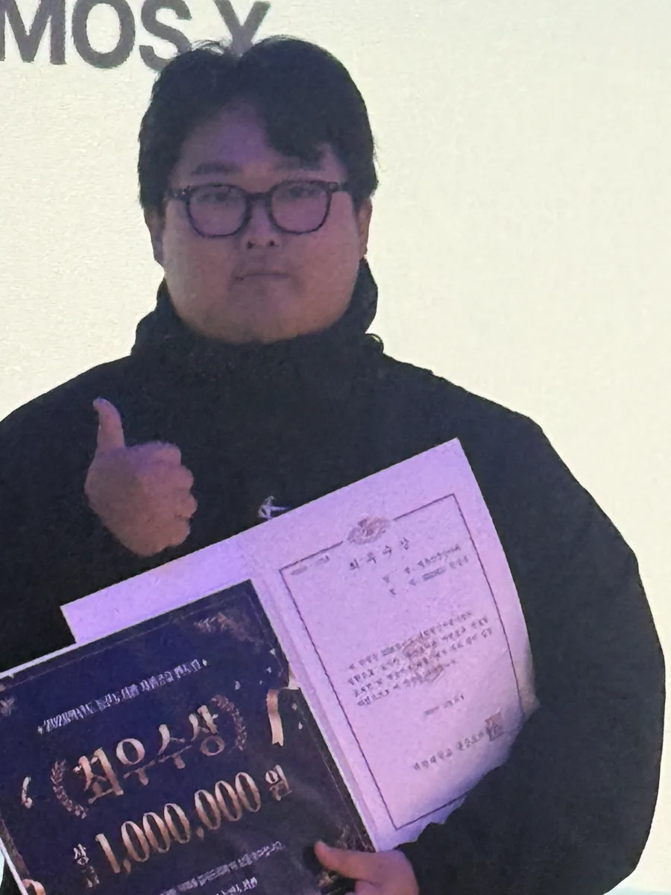

Background
졸음과 시선 이탈은 운전자가 스스로 알아차리기 어렵습니다.
화면 경고만으로는 놓치기 쉬워, 머리 바로 뒤에서
소리와 진동으로 직접 알려주는 장치를 만들었습니다.
문제적 사람들
2026
Team Portfolio
 전상훈팀장
전상훈팀장 장원준팀원
장원준팀원 김형우팀원
김형우팀원 최병재팀원
최병재팀원 남재현팀원
남재현팀원 유지호팀원
유지호팀원

 이가연팀원
이가연팀원캡스톤(헤드레스트) 참여 김기주 · 조환호 · Deniz Felix Unglaube
팀
문제적 사람들입니다.
Works
스마트 헤드레스트 우수상 · 지역혁신 인재양성 연합 페스티발 · 학과 1위 · 교내 최우수 → DIFA · FIX 전시
졸음과 시선 이탈은 운전자가 스스로 알아차리기 어렵습니다.
화면 경고만으로는 놓치기 쉬워, 머리 바로 뒤에서
소리와 진동으로 직접 알려주는 장치를 만들었습니다.

카메라로 운전자 상태를 판단하고
네 단계로 경고를 키웁니다.
정차 차량 · 피험자 4명 · 위험 단계 진입 9회 · 소프트웨어 판단 시간 기준
검증 데이터 기준 · AIHub 원천 약 15TB에서 24,256장 선별

실주행·저조도 시험은 아직 하지 않았습니다. 리프트(전후 위치 조절) 기구는 설계·제작했지만 운반 중 파손되어 시연에서 제외했습니다.
참여 — 전상훈(팀장 · SW·AI 통합) · 김기주(기구 제작) · 조환호(설계 · 문서) · Deniz Felix Unglaube(회로 · HW)
안심집 지도 최우수상 · 2026 지역혁신 인재양성 연합 페스티발프로토타입 RISE 생성형 AI 공모전 장려상 → 보완 후 최우수
집 안의 사진을 넘어,
집 밖의 생활까지.
공항을 낀 대구 동구 지저동에서 집을 고를 때 놓치기 쉬운 항공기 소음, 밤길, 생활 동선을 내 생활유형에 맞춰 한 지도에서 비교합니다.



21곳 × 9유형 = 추천 점수 189개를 다시 계산해 가중치와 결과가 일치하는지 확인 · 항공기 소음은 음원 5개를 섞은 48초 소리 체험(창문 열림/닫힘)으로 제공

지저동 21개 주소 기준의 비교 시연본이라 실제 매물과 호가는 아직 연결하지 않았습니다. 소리 체험은 동네 측정값과 가정한 창문 효과이고, 공개 자료가 없는 재난 이력은 ‘이력 없음’이 아니라 ‘미확인’으로 표시했습니다. 사용자 테스트에서 늦은 귀가 때는 정류장을 가장 중요하게 본다는 응답이 많아 다음 버전에서 가중치를 보정할 계획입니다.
직접 체험하기
m.site.naver.com/2hSyT
성당중학교 학생들과 함께한, 낮에 보는 우주
최우수상 · 2026학년도 동산도서관 자원공유 멘토링
2026년 10월 8일 오전 2시간 동안 계명대 동산도서관에서 성당중학교 학생들과 천문 체험 멘토링을 진행했습니다. 실제 밤하늘을 볼 수 없는 시간이어서 AR 천체관측과 간이망원경으로 낮에도 별을 살펴볼 수 있게 했습니다.
도서관 시설 투어, 천문학 기초 교육, 친환경 소재로 만드는 천문 교구, 눈가리기 리더십 활동을 하나의 프로그램으로 묶었습니다. 6월부터 약 5개월 동안 함께 기획하고 교구를 준비해 현장을 운영했습니다. 예산이 80만 원에서 40만 원으로 줄자 조별 활동으로 다시 설계했고, 만족도 조사에서는 응답 17명 전원이 긍정으로 답했습니다.
천체관측 동아리 AAA에서 함께 활동한 5명(전상훈 팀장, 장원준, 김형우, 정명현, 이가연)이 참여했습니다. 2026학년도 동산도서관 자원공유 멘토링에서 최우수상을 받았습니다.

대구 실전 리그 — 이력서 없는 도시, 대구
모르는 청년, 모르는 기업,
모르는 대구.
청년은 일을 해 볼 기회가 없고, 기업은 우리 일에 맞는 AI 사례가 없고, 대구시는 AX에 예산을 걸지만 기업이 무엇을 원하는지 모릅니다. 구직자 열에 아홉이 자기소개서에 AI를 써 본 지금, 서류로는 누가 일을 잘할지 알기 어렵습니다.


대회 당일 공개된 과제(1-1 첫 직무경험 + 2-1 청년정책 AI 안내)를 묶어 이틀 동안 만든 결과물입니다. 새 앱이 아니라 대구시 청년 포털 '젊프'에 메뉴로 얹는 안으로 설계했습니다. 화면은 제안 시안이며 실제 서비스가 아닙니다.

참여: 전상훈 · 장원준 · 남재현 · 유지호
화면 시안 열기
m.site.naver.com/2lQ87
thank you
똑바로 해라.